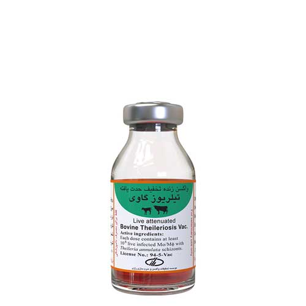

واکسن زنده تخفیف حدت یافته تیلریوز گاوی، موسسه رازی
📝نوع و شکل واکسن:
زنده تخفیف حدت یافته، سوسپانسیون سلولی، تزریقی
📝ترکیبات واکسن:
هر دز واکسن( 1 میلی لیتر)، حاوی مواد زیر است:
حداقل 1 میلیون سلول زنده مونوسیت - ماکروفاژ حاوی شیزونت تیلریا آنولاتا ( سویه s15)
گلیسرول به عنوان ماده محافظ در برابر برودت
سرم غیر فعال شده گوساله، تیمار شده با PEG و اشعه گاما
📝موارد مصرف:
به منظور ایجاد ایمنی فعال عیلی تیلریوز در گاو/ گوساله اصیل و دورگ
📝روش مصرف، دز و راه تجویز:
ابتدا ویال واکسن را از مخزن ازت خارج کرده به مدت 2-1 دقیقه در یک جعبه قرار دهید تا ازت آن کاملاً تبخیر شود ( استفاده از دستکش و ماسک محافظ ضروری است).
سپس اجازه دهید تا واکسن کاملاً ذوب شود ( برای تسریع در کار بهتر است با رعایت شرایط استریل، ویال را در داخل ظرف آب ولرم [ 37 درجه سانتی گراد] قرار دهید).
به منظور یکنواخت نمودن سوسپانسیون، ویال را به آرامی چندین بار سر و ته نمایید، سپس محتوای آن را با سرنگ کشیده و به هر گاو / گوساله، 1 میلی لیتر از راه زیر جلدی ( در ناحیه گردن، نزدیک به غده لنفاوی پیش کتفی) تزریق نمایید.
📝برنامه و زمان مناسب واکسیناسیون:
مناسب ترین زمان برای واکسیناسیون، اواخر پاییز تا پایان زمستان و قبل از شروع فعالیت کنه ها می باشد.
تجویز واکسن از سن 3 ماهگی آغاز و دز یاد آور هر سال یک بار تجویز شود.
📝زمان خودداری از مصرف گوشت و شیر:
پس از تجویز، واکسن به مدت 21 روز از مصرف گوشت خودداری شود.
📝موارد منع مصرف:
دام های آبستن بیش از هفت ماه و گوساله های کمتر از 3 ماه
تا ده روز پس از زایمان
فصل فعالیت کنه ها
دام های بیمار و ضعیف
📝عوارض جانبی:
در برخی موارد ممکن است واکنش های آنافیلاکتیک در نژاد های حساس رخ دهد. در چنین مواردی تجویز آدرنالین/ آنتی هیستامین زیر نظر دکتر دامپزشک توصیه می شود.
ممکن است در دام های واکسینه، تب خفیف و زودگذر و تورم عقده های لنفاوی نزدیک به محل تزریق مشاهد شود که خود به خود برطرف خواهد شد.
📝تداخلات دارویی:
از تجویز سایر واکسن ها و مصرف داروهای تضعیف کننده سیستم ایمنی در فاصله 2 هفته قبل و 2 هفته پس از مصرف این واکسن خودداری شود.
📝توصیه ها و احتیاط های لازم:
واکسن طبق برنامه سازمان دامپزشکی کشور تجویز شود.
واکسن از شبکه توزیع رسمی تهیه شده و طبق نظر دامپزشک تجویز شود.
به هنگام مصرف واکسن، شرایط آسپتیک رعایت شود.
به منظور حفظ یکنواختی سوسپانسیون، قبل و حین مصرف، ویال حاوی واکسن چندین بار سر و ته شود.
تمام محتوای ویال حداکثر تا 1 ساعت پس از ذوب شدن واکسن، مصرف شود.
از فریز مجدد واکسن ذوب شده، خودداری شود.
تمامی دام های سالم موجود در محل، به طور هم زمان واکسینه شوند.
حداقل 2 ساعت قبل و یک روز پس از واکسیناسیون، به دام ها استراحت داده و از جابه جایی آن ها خودداری شود.
به منظور کنترل جمعیت کنه های ناقل، ضروری است که به موازات تجویز واکسن تیلریوز گاوی، حمام ضد کنه و سم پاشی جایگاه نگهداری دام ( با سموم ضد کنه مناسب)، نیز انجام شود.
به هنگام واکسیناسیون از لوازم حفاظت شخصی( عینک، دستکش، ماسک، جکمه و روپوش) استفاده شود. در صورت تزریق اتفاقی واکسن به بدن بلافاصله موضع با آب و صابون شستشو داده و به پزشک مراجعه شود.
📝شرایط حمل و نقل و نحوه نگهداری:
در دمای 70- تا 196- درجه سانتی گراد ( ازت مایع) و دور از نور حمل و نگهداری شود. در این شرایط، واکسن تا یک سال پس از تاریخ تولید ( براساس تاریخ مندرج بر روی برچسب)، قابل مصرف خواهد بود.
📝نحوه معدوم نمودن باقی مانده و ویال واکسن:
وسایل یک بار مصرف مورد استفاده و ویال خالی واکسن در ظرف مخصوص وسایل تیز ریخته شده و سپس به طور صحیح سترون سازی ( اتوکلاو، سوزاندن، استفاده از مواد شیمیایی مناسب) و دفن بهداشتی شوند.
📝بسته بندی:
این واکسن در ویال های 12 دزی عرضه می شود.